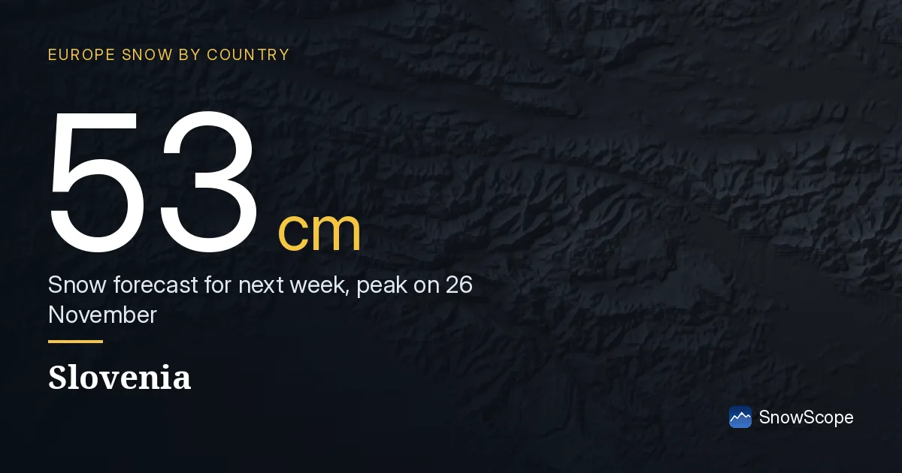
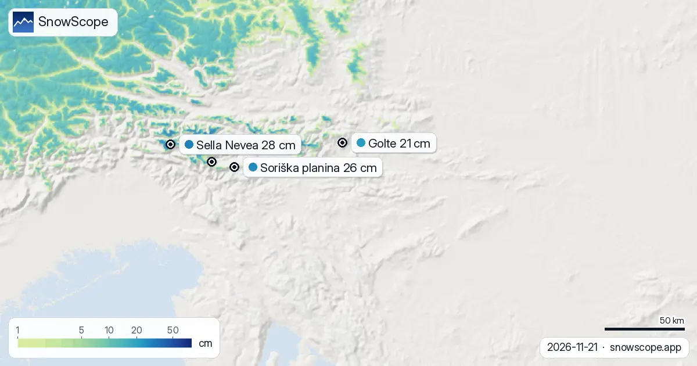

Slovenia: 53 cm snow forecast for next week, peak on 26 November
Slovenia will receive up to 53 cm of new snow in the next seven days, with the snowiest day on 26 November bringing 25 cm. This week's storm will add significant water to the mountains, raising the snow line and rebuilding cover after recent melt.
See the live snow forecast for Sella Nevea in the SnowScope appSnow depth, powder alerts and the 3D map, free.
What the next seven days will bring
A major snow system is moving toward Slovenia's mountains. Between now and 28 November, the high-altitude areas will gain up to 53 cm. The forecast shows most of this snow will arrive between now and 26 November, with 25 cm falling on that single day. This concentrated event means rapid water input to the mountain snowpack.
The 72-hour period just ended (18-21 November) already left 28 cm in the Julian Alps and 44 cm in the Kamnik-Savinja Alps. That sequence has stabilised conditions at higher elevations. The coming system will push the snow line higher and fill gaps left by recent warm days.
| Resort | Snow depth | New snow, 72 h | Coming, next days | Top |
|---|---|---|---|---|
| Sella Nevea | 28 cm | 36 cm | 22 cm | 2,137 m |
| Soriška planina | 26 cm | 1 cm | 8 cm | 1,526 m |
| Golte | 21 cm | 4 cm | 10 cm | 1,570 m |
| Vogel | 17 cm | 12 cm | 22 cm | 1,731 m |
| Krvavec | 14 cm | 21 cm | 23 cm | 1,963 m |

Where snow will be deepest
Sella Nevea sits highest at 2,137 m and already holds 28 cm from recent storms. It will receive up to 22 cm more in the next three days, keeping it as the main snow reservoir. Krvavec at 1,963 m will also benefit, gaining 23 cm over three days to reach a usable depth.
Above 2,000 m across the region, snow cover is now complete (100 percent). Between 1,500 and 2,000 m, cover stands at 83 percent, with a mean depth of 7 cm. The incoming snow will push reliable cover down to around 1,500 m by week's end, where water storage matters most for winter runoff.

Snow depth now and the week ahead
Measured snow on the ground today covers 750 km2 across the region, down 40 km2 from yesterday but stable after yesterday's slow melt. This total is still well below the 1,160 km2 recorded seven days ago, before the warm spell. The incoming snow will reverse that trend sharply.
In the three days after 26 November (27-29 November), falls will ease to a maximum of 18 cm. Week two (29 November to 5 December) looks drier, with only 15 cm possible. This pattern means the main water input arrives in the next 5 to 6 days, then slows.
Mountain bands and storage
The snow line now sits at 1,500 m. Above that, conditions are locked in: mean depth 7 cm from 1,500 to 2,000 m, and 20 cm from 2,000 to 2,500 m. Below 1,500 m, little snow persists (1 cm mean depth between 1,000 and 1,500 m; almost none below 1,000 m).
When 25 cm falls on 26 November, highest zones will reach 30-45 cm, depending on aspect and terrain. The 1,500 to 2,000 m band—critical for water storage—will gain most of the new snow and climb rapidly toward 30 cm. This is where winter water reserves build.
Recent shifts in coverage
The past five days saw sharp swings. Snow cover dropped from 1,130 km2 (16 November) to just 260 km2 (18 November) as warm air melted lower slopes. Fresh snowfall on 19 November pushed it back to 760 km2. Today's figure of 750 km2 shows minor further loss, but the arrival of heavier snow will arrest that decline.
Sella Nevea has led throughout, holding 28 cm today. Soriška planina and Golte received little fresh snow (1-4 cm in 72 hours) and sit lower in terms of depth and elevation, so they will gain snow more slowly as the system progresses.
Nearby context: Austria and Italy ahead
Austria's high glaciated peaks already hold 63 cm (Stubaier Gletscher) and face up to 35 cm more in seven days. Italy's leading site, Pfelders, sits at 118 cm—far deeper than Slovenia. These neighbours show what well-established winter snowpack looks like; Slovenia is still building toward that standard. The coming week is a critical step in that direction.
Tips for skiers
- Expect rapid snow depth increase between now and 27 November, especially above 1,500 m where most water will be stored. Travel high to find the thickest new snow.
- On 26 November, the heaviest falls will arrive. Plan mountain activities for clear windows on 22-25 November if stability is a concern; fresh snow always carries temporary instability risk.
- Below 1,500 m, snow cover remains patchy. Early-season rocks and thin patches are likely; check actual conditions carefully on lower slopes until cover thickens.
- By late November, water input to streams and reservoirs will spike as melt accelerates from warm base layers beneath new snow. Monitor local water management updates if you work with mountain hydrology.
- Consult the official avalanche bulletin (ARSO) before any off-piste activity, particularly on steep slopes receiving fresh snow between 1,500 and 2,000 m.
About these numbers
Resort snow depths are the deepest snow on the resort's upper slopes on the date shown; they are estimates for an area, not a measurement at one point. Forecasts can change. Always read the official avalanche bulletin before going off-piste.
Cite this report
For research, teaching or the press: the numbers and charts are free to reuse under CC BY 4.0 with this citation.
SnowScope (2026), Slovenia: 53 cm snow forecast for next week, peak on 26 November, https://snowscope.app/blog/en/2026/11/slovenia-snow-on-the-way-21-november-2026.html, accessed 2026-11-21
SnowScope (Atlas Labs). (2026, November 21). Slovenia: 53 cm snow forecast for next week, peak on 26 November. SnowScope snow reports. https://snowscope.app/blog/en/2026/11/slovenia-snow-on-the-way-21-november-2026.html
BibTeX
@misc{snowscope2026sloveniasnowontheway21no,
author = {{SnowScope (Atlas Labs)}},
title = {Slovenia: 53 cm snow forecast for next week, peak on 26 November},
year = {2026},
month = nov,
howpublished = {\url{https://snowscope.app/blog/en/2026/11/slovenia-snow-on-the-way-21-november-2026.html}},
note = {Published 2026-11-21 12:41 UTC; accessed 2026-11-21}
}· CC BY 4.0 · Methods, data and tools →
Sella Nevea: snow and temperature by height, this winter vs last (tools) →
Follow Sella Nevea
Free: a message when fresh snow is coming, and the forecast every morning.
More snow reports

From 13 to 19 November 2026 Slovenia got the most snow and kept it; Serbia and Croatia had a deep but short white weekend; Montenegro only on Durmitor; Bulgaria almost none. The ranking, with links to each country report.

Tornik on Zlatibor had up to 39 cm on its upper slopes on 15 November 2026; by Wednesday it had melted. Kopaonik barely turned white. The week day by day and what comes next.

Savin Kuk above Žabljak picked up 22 cm of snow from 13 to 19 November and still has 6 cm today. Kolašin 1450 and 1600 are bare. The week day by day, and the next chances.